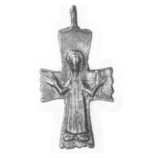

Catalog › CE-0039 · LOV1999-33
Cruce pectorală cu Hristos răstignit în colobium lung
sec. X (901–1000) · Prahovo, districtul Bor, Serbia · Muzeul Național Maghiar, Budapesta, inv. 1902.36.3
pectoral cross, bronz; c. X (901–1000); found at Prahovo, districtul Bor, Serbia; kept at Muzeul Național Maghiar, Budapesta.


Identificare
- Categorie
- Cruce pectorală simplă
- Material
- Bronz
- Tehnică
- Turnare în relief
- Dimensiuni
- Î 40 × L 21 mm
Iconografie
- Avers
- Răstignirea (Hristos în colobium)
- Descriere avers
- Hristos în relief, cu glorie, în colobium lung cu falduri verticale, cu brațele îndoite în afară, mâini mari.
- Revers
- Fără decor
- Descriere revers
- Neornamentată.
Datare și atribuire
- Datare
- sec. X (901–1000)
- Centru
- Balcani
Descoperire
- Localitate
- Prahovo
- Regiune
- districtul Bor
- Țară
- Serbia
- Context
- Colecție (fără context)
- Coordonate
- 44.2948° N, 22.5840° E
- Precizia locului
- Doar localitatea
Păstrare și referințe
- Colecție
- Muzeul Național Maghiar, Budapesta
- Nr. inventar
- 1902.36.3
- Bibliografie
- Zs. Lovag, Mittelalterliche Bronzegegenstände des Ungarischen Nationalmuseums (Catalogi Musei Nationalis Hungarici, Series Archaeologica III), Budapest, 1999, p. 30, cat. nr. 33, reprodusă la Abb. 33 (planșele, p. 135). Bibliografie citată în sursă: Nepublicată în sursă.
- Figura
- Abb. 33
- Planșe
- Lovag 1999, planșele, p. 135
- Observații
- Datare după Lovag: sec. X. X. Origine provincial-bizantină (Balcani). Cumpărată de muzeu împreună cu obiecte din epoca romană și din epoca cuceririi maghiare. Nepublicată în sursă. Brațe care se lărgesc ușor, cel de sus drept, celelalte ondulate; ureche de agățare sus. Coordonate: ale localității (aproximative), nu date în sursă.
Citare: Corpus Encolpiorum, CE-0039, Cruce pectorală cu Hristos răstignit în colobium lung, --root/piese/LOV1999-33/ (accesat 2026-10-20).